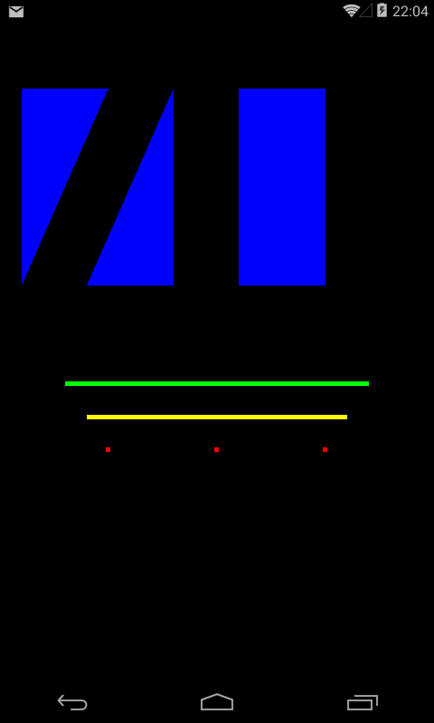
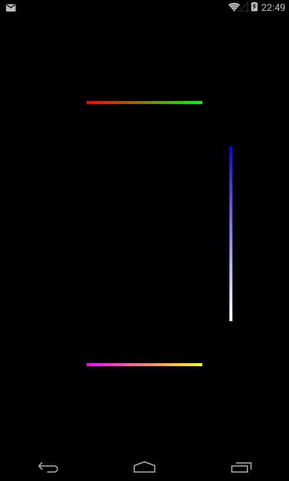
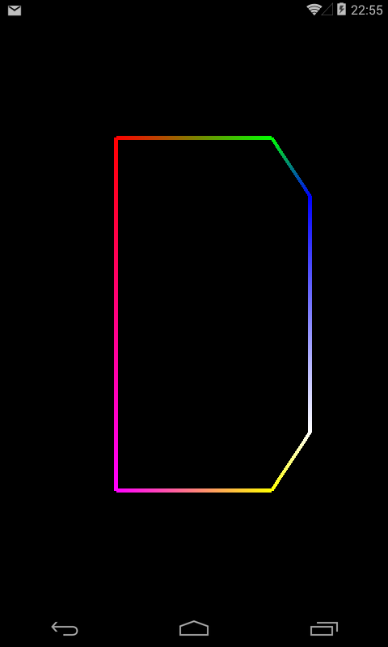
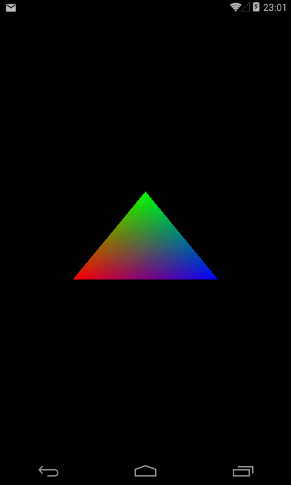

В этом уроке:
- передаем цвет для вершин
- используем varying переменную
На прошлом уроке мы научились рисовать графические примитивы. Теперь научимся использовать при этом различные цвета.
Напомню, что цвет мы задавали следующим образом:
glUniform4f(uColorLocation, 0.0f, 0.0f, 1.0f, 1.0f);
Где uColorLocation – это переменная, которая знает, где находится во фрагментном шейдере переменная u_Color, которая отвечает за цвет (см. Урок 169).
Вызов метода glUniform4f можно вынести из метода bindData и поместить его в onDrawFrame
Открываем проект, в нем модуль этого урока - lesson171_colors. Смотрим класс OpenGLRenderer. Он похож на этот же класс из примера прошлого урока. Т.е. он нарисует те же 4 треугольника, 2 линии и три точки. Но теперь он сделает это разными цветами.
Вершины всех примитивов заданы в массиве
float[] vertices = {
// треугольник 1
-0.9f, 0.8f,
-0.9f, 0.2f,
-0.5f, 0.8f,
// треугольник 2
-0.6f, 0.2f,
-0.2f, 0.2f,
-0.2f, 0.8f,
// треугольник 3
0.1f, 0.8f,
0.1f, 0.2f,
0.5f, 0.8f,
// треугольник 4
0.1f, 0.2f,
0.5f, 0.2f,
0.5f, 0.8f,
// линия 1
-0.7f, -0.1f,
0.7f, -0.1f,
// линия 2
-0.6f, -0.2f,
0.6f, -0.2f,
// точка 1
-0.5f, -0.3f,
// точка 2
0.0f, -0.3f,
// точка 3
0.5f, -0.3f,
};
А в методе onDrawFrame есть изменения:
@Override
public void onDrawFrame(GL10 arg0) {
glClear(GL_COLOR_BUFFER_BIT);
glLineWidth(5);
// синие треугольники
glUniform4f(uColorLocation, 0.0f, 0.0f, 1.0f, 1.0f);
glDrawArrays(GL_TRIANGLES, 0, 12);
// зеленые линии
glUniform4f(uColorLocation, 0.0f, 1.0f, 0.0f, 1.0f);
glDrawArrays(GL_LINES, 12, 4);
// красные точки
glUniform4f(uColorLocation, 1.0f, 0.0f, 0.0f, 1.0f);
glDrawArrays(GL_POINTS, 16, 3);
}
Перед каждым вызовом glDrawArrays идет вызов glUniform4f, который задает цвет. Т.е. треугольники будут синими, линии – зелеными, а точки – красными.
Запускаем
Но что, если мы хотим например одну из линий нарисовать желтым цветом. Тогда мы просто разделим вызов glDrawArrays, который рисует две линии, на два вызова, каждый из которых будет рисовать одну линию. И перед каждым вызовом будем ставить нужный цвет.
Перепишем onDrawFrame:
public void onDrawFrame(GL10 arg0) {
glClear(GL_COLOR_BUFFER_BIT);
glLineWidth(5);
// синие треугольники
glUniform4f(uColorLocation, 0.0f, 0.0f, 1.0f, 1.0f);
glDrawArrays(GL_TRIANGLES, 0, 12);
// зеленая линия
glUniform4f(uColorLocation, 0.0f, 1.0f, 0.0f, 1.0f);
glDrawArrays(GL_LINES, 12, 2);
// желтая линия
glUniform4f(uColorLocation, 1.0f, 1.0f, 0.0f, 1.0f);
glDrawArrays(GL_LINES, 14, 2);
// красные точки
glUniform4f(uColorLocation, 1.0f, 0.0f, 0.0f, 1.0f);
glDrawArrays(GL_POINTS, 16, 3);
}
Мы разбили один вызов рисования линий на два и перед каждым из них задаем нужный цвет.
Обратите внимание на параметры этих двух новых вызовов метода glDrawArrays. Первая линия использует две вершины, начиная с индекса 12. А вторая также 2 вершины, но начиная с индекса 14. А до разделения этот метод брал 4 вершины, начиная с индекса 12.
Запускаем

Этот способ задания цвета достаточно прост. Существует более интересный способ. Мы можем задать цвет для каждой вершины примитива. И в процессе рисования система сама выполнит интерполяцию цветов вершин на всю поверхность графического примитива.
Т.е., например, мы рисуем линию, используя две вершины. Для первой вершины мы указали зеленый цвет, а для второй – красный. Нарисованная линия будет градиентной, т.е. иметь зеленый цвет со стороны первой вершины, а по мере приближения ко второй вершине зеленый цвет будет сменяться красным. Т.е. система сама рассчитает цвета всех промежуточных пикселей между вершинами (это и называется умным словом Интерполяция).
Перепишем шейдеры, сначала вершинный vertex_shader.glsl:
attribute vec4 a_Position;
attribute vec4 a_Color;
varying vec4 v_Color;
void main()
{
gl_Position = a_Position;
gl_PointSize = 5.0;
v_Color = a_Color;
}
Мы добавили атрибут a_Color. В него мы будем передавать значение цвета для каждой вершины, аналогично тому как мы передаем координаты вершины в a_Position.
Также, мы добавили переменную v_Color. Обратите внимание на слово varying. Мы уже знаем, что существуют attribute переменные, в которые мы передаем отдельные данные для каждой вершины в вершинном шейдере. Есть uniform переменные, в которые мы передаем одно значение для всех вершин в вершинном шейдере и всех точек в фрагментном шейдере. Теперь мы добрались до третьего (и последнего) вида переменных в шейдерах - varying. Такие переменные используются для обмена данными между вершинным и фрагментным шейдером. Переменную varying мы сами заполняем в вершинном шейдере, далее система интерполирует эти значения и возвращает результат нам в фрагментный шейдер.
В нашем примере в вершинном шейдере мы помещаем в v_Color значение a_Color. Т.е. если рассматривать пример зелено-красной линии, то первая вершина поместит в v_Color значение зеленого цвета, а вторая – красного. Далее выполняется фрагментный шейдер для каждой точки между этими вершинами, и в этом шейдере мы будем получать интерполированное значение v_Color. Оно будет соответствовать зеленому цвету для точек около первой вершины и постепенно меняться на красный цвет по мере отрисовки точек по пути ко второй вершине. Это даст нам возможность нарисовать зелено-красную линию.
Все расчеты значений varying переменных выполняет система. Нам нужно только задать значения в вершинном шейдере и считать их в фрагментном.
Перепишем фрагментный шейдер fragment_shader.glsl:
precision mediump float;
varying vec4 v_Color;
void main()
{
gl_FragColor = v_Color;
}
Мы добавляем varying переменную v_Color. Значение в ней уже рассчитано системой на основании данных из вершинного шейдера. Нам остается только записать его в gl_FragColor.
Теперь необходимо поменять код приложения, чтобы в вершинный шейдер передавать не только координаты вершин, но и цвет.
Меняем OpenGLRenderer.java:
удаляем переменную
private int uColorLocation;
и вместо нее добавляем
private int aColorLocation;
В prepareData задаем вершины:
float[] vertices = {
// линия 1
-0.4f, 0.6f, 1.0f, 0.0f, 0.0f,
0.4f, 0.6f, 0.0f, 1.0f, 0.0f,
// линия 2
0.6f, 0.4f, 0.0f, 0.0f, 1.0f,
0.6f, -0.4f, 1.0f, 1.0f, 1.0f,
// линия 3
0.4f, -0.6f, 1.0f, 1.0f, 0.0f,
-0.4f, -0.6f, 1.0f, 0.0f, 1.0f,
};
Будем рисовать три линии, т.е. задаем 6 вершин. Но теперь для каждой вершины есть не только две координаты XY, но и три RGB-компонента цвета. Всего 2 + 3 = 5 значений для каждой вершины.
Перепишем bindData:
private void bindData() {
// координаты
aPositionLocation = glGetAttribLocation(programId, "a_Position");
vertexData.position(0);
glVertexAttribPointer(aPositionLocation, 2, GL_FLOAT, false, 20, vertexData);
glEnableVertexAttribArray(aPositionLocation);
// цвет
aColorLocation = glGetAttribLocation(programId, "a_Color");
vertexData.position(2);
glVertexAttribPointer(aColorLocation, 3, GL_FLOAT, false, 20, vertexData);
glEnableVertexAttribArray(aColorLocation);
}
Сначала передаем данные по координатам. Тут почти без изменений, только в методе glVertexAttribPointer пятым параметром мы передаем 20. Раньше мы передавали сюда 0.
Этот пятый параметр называется stride. В него необходимо поместить кол-во байт, которое занимают в нашем массиве данные по каждой вершине. У нас для каждой вершины заданы 5 float значений: 2 координаты (XY) и три компонента цвета (RGB). 5 float значений – это 5 * 4 байта = 20 байтов. Именно это значение мы и передаем в stride.
Т.е. если мы рассмотрим две этих строки
vertexData.position(0);
glVertexAttribPointer(aPositionLocation, 2, GL_FLOAT, false, 20, vertexData);
то получится примерно такая схема:
1) позиция в массиве vertexData ставится в 0, т.е. на первый элемент
2) система берет 2 float значения (т.е. координаты вершины) из vertexData и передает их в aPositionLocation (что соответствует атрибуту a_Position в вершинном шейдере)
3) позиция перемещается на 20 байтов, т.е. к координатам следующей вершины.
Пункты 2 и 3 выполняются столько раз, сколько вершин необходимо нарисовать. Смещение на 20 байтов каждый раз будет устанавливать позицию в массиве на данные о координатах следующей вершины.
Смотрим дальше. Тут все аналогично. В aColorLocation мы получаем расположение атрибута a_Color и выполняем код
vertexData.position(2);
glVertexAttribPointer(aColorLocation, 3, GL_FLOAT, false, 20, vertexData);
1) позиция в массиве vertexData ставится в 2, т.е. на третий элемент (туда, где начинаются данные о цвете первой вершины)
2) система берет 3 float значения (т.е. RGB-компоненты цвета вершины) из vertexData и передает их в aColorLocation (что соответствует атрибуту a_Color в вершинном шейдере)
3) позиция перемещается на 20 байтов, т.е. к цвету следующей вершины
Пункты 2 и 3 выполняются столько раз, сколько вершин необходимо нарисовать. Смещение на 20 байтов каждый раз будет устанавливать позицию в массиве на данные о цвете следующей вершины.
Осталось переписать метод onDrawFrame:
@Override
public void onDrawFrame(GL10 arg0) {
glLineWidth(5);
glDrawArrays(GL_LINES, 0, 6);
}
Как видите, здесь мы просто просим систему нарисовать нам линии используя 6 вершин. И ничего не говорим ни про цвет, ни про координаты. Система будет запускать вершинный шейдер 6 раз, и благодаря методам glVertexAttribPointer (которые мы только что подробно рассмотрели) сможет разобраться, какие данные из массива ей надо будет использовать в качестве координат вершин (она передаст их в a_Position), а какие – в качестве данных о цвете (a_Color).
Запускаем приложение

В результате видим линии, цвет которых меняется от одной вершины к другой. Это результат того, что мы передали данные о цвете в вершинный шейдер и использовали varying переменные.
Перепишем onDrawFrame:
@Override
public void onDrawFrame(GL10 arg0) {
glLineWidth(5);
glDrawArrays(GL_LINE_LOOP, 0, 6);
}
Используем режим рисования линий, который соединит все вершины между собой.
Запускаем

И напоследок нарисуем треугольник с вершинами разного цвета и посмотрим, как он интерполирует эти цвета на всю свою поверхность.
Перепишем массив vertices в prepareData:
float[] vertices = {
-0.5f, -0.2f, 1.0f, 0.0f, 0.0f,
0.0f, 0.2f, 0.0f, 1.0f, 0.0f,
0.5f, -0.2f, 0.0f, 0.0f, 1.0f,
};
Задаем три вершины, для каждой из которых заполняем две координаты и три компонента цвета.
В методе onDrawFrame просим нарисовать треугольник.
@Override
public void onDrawFrame(GL10 arg0) {
glLineWidth(5);
glDrawArrays(GL_TRIANGLES, 0, 3);
}
Запускаем

и получаем градиентную заливку
Надеюсь, что после этого урока начала складываться общая картина механизма шейдеров. Ее можно разбить на пункты:
1)Метод glDrawArrays, в котором мы указываем какие фигуры рисовать и сколько для этого использовать вершин. Сколько вершин мы здесь укажем, столько раз и вызовется вершинный шейдер.
2)Вершинный шейдер имеет атрибуты, в которые нам необходимо передавать данные о вершинах. За это отвечает метод glVertexAttribPointer, в котором мы подробно объясняем системе, из какого массива брать данные и по каким правилам (оступ, тип данных, кол-во значений на вершину)
3)Запускается вершинный шейдер, в котором мы пока что просто передаем полученные данные дальше на отрисовку - gl_Position. По этим координатам система будет рисовать вершины примитивов. Также в вершиннном шейдере мы используем varying переменную, чтобы интерполировать цвет и передать его в фрагментный шейдер.
4)Фрагментный шейдер служит для прорисовки содержимого примитива. Т.е. он вызывается для каждой точки примитива. В нашем случае он получает интерполированный цвет и передает его далее в gl_FragColor. Этот цвет мы и увидим на экране.
Советую поиграться с массивом vertices и попробовать задать там свои координаты и цвета, и использовать разные фигуры в методе glDrawArrays. Это поможет лучше понять все эти механизмы.